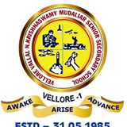
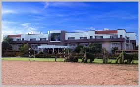
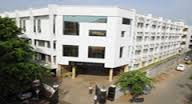

MY STORY GOES AS THIS
INTRODUCTION
My father works in L.I.C of India,which has its branches stretched all over the country and even at few places abroad.So, till my 7th grade we travelled a lot and I studied at quite a many schools and also places whcih I will be describing in this page.
This gives a brief idea to you with regard to it.
| NAME OF THE SCHOOL | PLACE | GRADE STUDIED |
| DEPAUL SCHOOL | ATMAKUR, KURNOOL DISTRICT | 1st GRADE |
| MONTESSORI SCHOOL | KURNOOL | 2,3 GRADES |
| V.V.N.K.M SCHOOL | VELLORE,TAMIL NADU | 4th GRADE |
| SHRISHTI VIDYASHRAM | VELLORE,TAMIL NADU | 5,6 GRADES |
| LITTLE ANGELS SCHOOL | VISAKHAPATNAM(M.V.P BRANCH) | 7,8,9,10 GRADES |
| PARAVYOMA CLASSES | VISAKHAPATNAM | 11,12 GRADES |
PRIMARY
1. I have done my first grade in Depaul's school in Atmakur a town in the district of Kurnool.I dont remember much about it.You can know more about the school here
2.
Then we moved on to Kurnool and here I completed my 2ndand 3rdgrade.
3. 
Then we moved on to Vellore in Tamil Nadu and I have done my 4thgrade in V.V.N.K.M School.
You want to know more abou it, go here
4. Then I shifted over to Shrishti Vidyasram school in Vellore,which is very close to the V.I.T. I remember a bit of this place and it is nice and the standards of education are very high.Click on the pic to know more about the school.
LITTLE ANGELS SCHOOL
 Finally,I shifted over to the place where I stayed the most Visakhapatnam.I got into a school called Little Angels School.It was a modest school with minimal yet sufficient infrastructure.It was good for me although many differ.You can go here to know more.
INTERMEDIATE
I have done my Intermediate at MahatiJr.college although it was only on paper.The coaching class where I got trained is Paravyoma classes.It was a very beautiful place,one of the best places I have been to.The teachers are really nice and caring and are self-less. I am sorry as I donot have any web site where you can get to know of it.
CURRENT STUDIES
I am currently doing my B.Tech in C.S.E at IIIT-Hyderabad.I joined in the year 2015 and I really looking forward to learning a lot of nice things related to computers and otherwise.You can know about my college fully from this page.